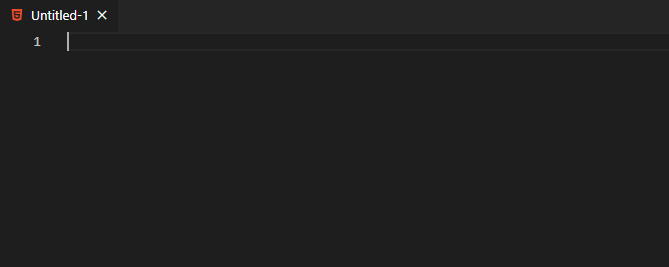
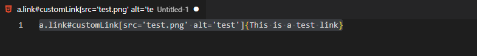

# [Front-end] Emmet , 前端快速開發的神兵利器
# 一個 Snapchat 標準庫，只需要少少的記憶，就可以大大提升 HTML、CSS 的撰寫效率
VSCode 最近的更版對於 Emmet 的支持更加完整了，因此決定來寫一篇文章介紹 Emmet 。
身為 web engineer ，在寫 HTML 的時候總是要打那煩人的左右角括號，並且還要在每個標籤結尾寫上結尾標籤，著實麻煩。
emmet 就是為了我們這種懶人發明的一鍵 HTML 產生器！
我們只需要依照著 Emmet 的規則，編寫我們想要的 html 結構，之後按下 「Tab」，Emmet 就會自動幫我產生相對應的 HTML Code ！
就像上面的那張 GIF 展示的那樣～
Emmet Documentation
Emmet is a web-developer's toolkit that can greatly improve your HTML & CSS workflow: Basically, most text editors out… docs.emmet.io
Emmet 的語法很簡單也不多，且很多規則跟 CSS 的選擇器語法很相近。對於會寫 CSS 的人來說，幾乎是無痛學習。
以下就來針對 Emmet 的語法介紹一下。
元素標籤 + Tab
emmet 的使用方法就是，打好一串表達語法之後，按下「Tab」，就會自動轉換成相對應的 HTML 了。
使用 "!" 一鍵生成 HTML 結構
emmet 可以使用 "!" 一鍵生成 HTML Template，我們不用再自己從 <!DOCTYPE html> 開始一個字一個字敲打了。

使用 > 表示結構的「下一層」
像是 CSS 選擇器中，我們想要表達階層結構的時候，可以使用 > 來選取子元素。Emmet 也可以使用 「>」 來表示這種巢狀結構。
例如：
1
div>ul>li
會展開成這樣
1
2
3
4
5<div>
<ul>
<li></li>
</ul>
<div>
使用 *N 代表要重複 N 次
例如，我們可以使用 li*5 讓他自動重複 5 次，產生五個 <li></li>
使用 + 表示結構的「同一層」
通常一個標準的 html 頁面需要有 header, main, footer 。這時候就可以用 + 很簡單地產生。
1
header+main+footer
會展開成
1
2
3<header></header>
<main></main>
<footer></footer>
綜合練習
如果我想要產生如下的結構，該怎麼寫呢？
1
2
3<header></header>
<main>
<article></article>
寫法： header+main>article+section*6
使用 ^ 跳回上一層
我們可以使用 ^ 跳回到上一層，例如剛剛的例子，如果我們想要在 main 後面繼續接著寫 HTML 結構，我們就可以使用 ^ 來回到與 main 同一層的地方繼續往下串接我們的語法。
1
header+main>article+section*6^footer
會展開成
1
2
3<header></header>
<main>
<article></article>
當然，如果我們想要往外多跳幾層，我們只需要多重複幾次 ^ 即可。
使用 ( ) 將結構分塊，增加可讀性
由於 Emmet 的語法轉換器，是一次 parse 這一連串的字串，因此不允許語法中存在空格，但這也讓在撰寫這表達式的時候可讀性不佳。此時我們可以使用 ( ) 來為結構分塊。
以上方的例子來說，我們就可以改寫成下方這樣
1
header+(main>nav>ul>li*4)+article+section*3+footer
使用。表示 class / # 表示 ID / [] 表示其他屬性 / {} 表示標籤之間的內容
Emmet 一樣支援標籤內的屬性描述。
例如最常見的 <a> 標籤，我們就可以給他額外的屬性
1
a.link#customLink[src='test.png' alt='test']{This is a test link}
會自動展成這樣
1
<a href="" class="link" id="customLink" src="test.png" alt="test">This is a test link</a>

使用 $ 可以自動記數
有些時候，我們希望 class 的名稱能夠照著數字順序給，這個時候，可以使用 $ 讓他 auto incremental
1
li.class$*5
會展開成
1
2
3
4
5<li class="class1"></li>
<li class="class2"></li>
<li class="class3"></li>
<li class="class4"></li>
<li class="class5"></li>
當然我們也可以多給幾個 $，來代表要「幾位數」
使用 @ 給予起始值
剛剛的例子中，我們也可以不要從 1 開始，使用 @ 可以指定一個起始數字。
使用 - 來倒著數回去
這基本上很少使用到，但是還是說一下。我們除了順著數，也可以倒著屬回去。
一樣以剛剛的 li 為例，我們如果在 @ 後面多增加一個 「-」，就可以讓數字由大到小排列。
1
li.class$@-10*30
會展開成
1
2
3
4
5
6
7
8
9
10
11<li class="class39"></li>
<li class="class38"></li>
<li class="class37"></li>
<li class="class36"></li>
<li class="class35"></li>
<li class="class34"></li>
<li class="class33"></li>
<li class="class32"></li>
<li class="class31"></li>
<li class="class30"></li>
....
當然，我們也可以一般地使用 (不設定起始數字)
Emmet 的功能很強大，但是其實語法都是有邏輯可以依循的，學起來感覺並不會太困難。
如果記不起來也沒關係，以下已經幫忙提供了一份小抄。
# 結語
Emmet 真的是懶人工程師的一大利器，我個人認為以這學習成本極低的情況，多了解一項也並非壞事。
而且也僅需要敲打少少的文字，就能產生好整份 HTML 結構。真的是用過就回不去了！
# 參考資料
- https://docs.emmet.io/cheat-sheet/
- https://www.wfublog.com/2017/08/emmet-sublime-text.html
- https://pjchender.blogspot.com/2016/07/emmet.html